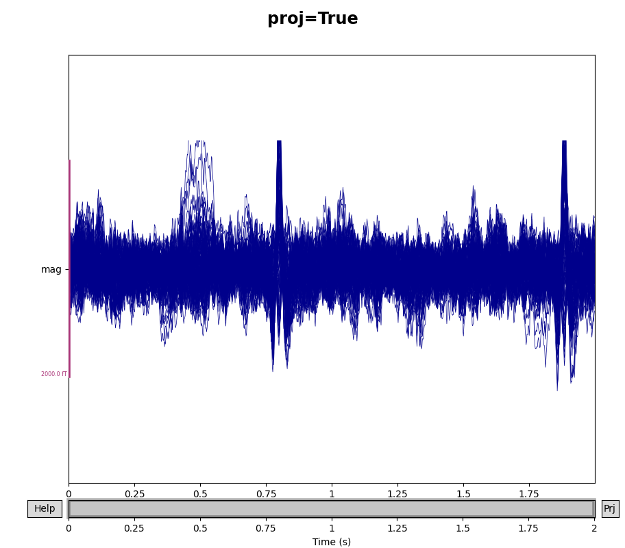
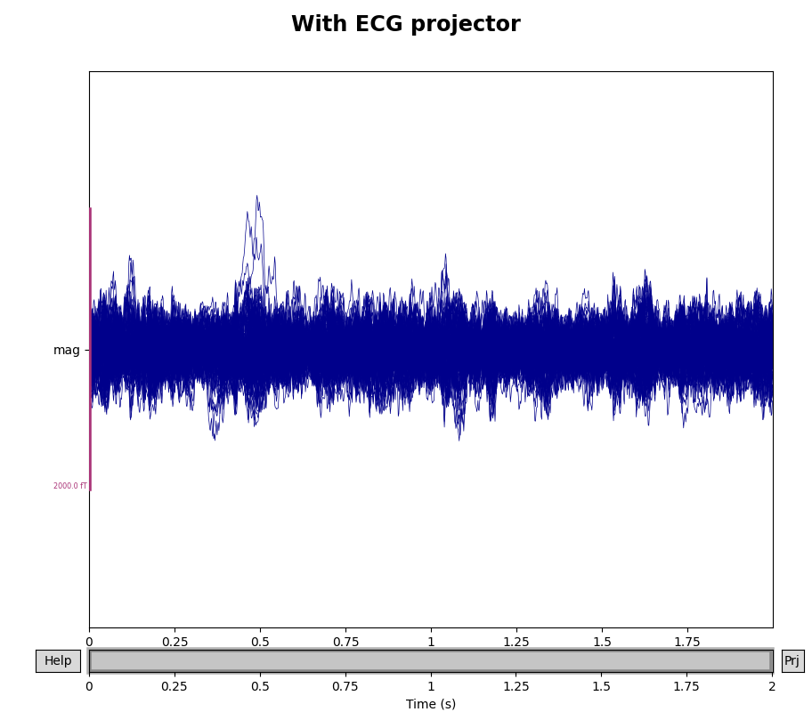

Note
Go to the end to download the full example code.
Background on projectors and projections#
This tutorial provides background information on projectors and Signal Space Projection (SSP), and covers loading and saving projectors, adding and removing projectors from Raw objects, the difference between “applied†and “unapplied†projectors, and at what stages MNE-Python applies projectors automatically.
We’ll start by importing the Python modules we need; we’ll also define a short function to make it easier to make several plots that look similar:
# Authors: The MNE-Python contributors.
# License: BSD-3-Clause
# Copyright the MNE-Python contributors.
import os
import matplotlib.pyplot as plt
import numpy as np
from mpl_toolkits.mplot3d import Axes3D # noqa
from scipy.linalg import svd
import mne
def setup_3d_axes():
ax = plt.axes(projection="3d")
ax.view_init(azim=-105, elev=20)
ax.set_xlabel("x")
ax.set_ylabel("y")
ax.set_zlabel("z")
ax.set_xlim(-1, 5)
ax.set_ylim(-1, 5)
ax.set_zlim(0, 5)
return ax
What is a projection?#
In the most basic terms, a projection is an operation that converts one set of points into another set of points, where repeating the projection operation on the resulting points has no effect. To give a simple geometric example, imagine the point \((3, 2, 5)\) in 3-dimensional space. A projection of that point onto the \(x, y\) plane looks a lot like a shadow cast by that point if the sun were directly above it:
ax = setup_3d_axes()
# plot the vector (3, 2, 5)
origin = np.zeros((3, 1))
point = np.array([[3, 2, 5]]).T
vector = np.hstack([origin, point])
ax.plot(*vector, color="k")
ax.plot(*point, color="k", marker="o")
# project the vector onto the x,y plane and plot it
xy_projection_matrix = np.array([[1, 0, 0], [0, 1, 0], [0, 0, 0]])
projected_point = xy_projection_matrix @ point
projected_vector = xy_projection_matrix @ vector
ax.plot(*projected_vector, color="C0")
ax.plot(*projected_point, color="C0", marker="o")
# add dashed arrow showing projection
arrow_coords = np.concatenate([point, projected_point - point]).flatten()
ax.quiver3D(
*arrow_coords,
length=0.96,
arrow_length_ratio=0.1,
color="C1",
linewidth=1,
linestyle="dashed",
)
Note
The @ symbol indicates matrix multiplication on NumPy arrays, and was
introduced in Python 3.5 / NumPy 1.10. The notation plot(*point) uses
Python argument expansion to “unpack†the elements of point into
separate positional arguments to the function. In other words,
plot(*point) expands to plot(3, 2, 5).
Notice that we used matrix multiplication to compute the projection of our point \((3, 2, 5)\) onto the \(x, y\) plane:
…and that applying the projection again to the result just gives back the result again:
From an information perspective, this projection has taken the point \(x, y, z\) and removed the information about how far in the \(z\) direction our point was located; all we know now is its position in the \(x, y\) plane. Moreover, applying our projection matrix to any point in \(x, y, z\) space will reduce it to a corresponding point on the \(x, y\) plane. The term for this is a subspace: the projection matrix projects points in the original space into a subspace of lower dimension than the original. The reason our subspace is the \(x,y\) plane (instead of, say, the \(y,z\) plane) is a direct result of the particular values in our projection matrix.
Example: projection as noise reduction#
Another way to describe this “loss of information†or “projection into a subspace†is to say that projection reduces the rank (or “degrees of freedom”) of the measurement — here, from 3 dimensions down to 2. On the other hand, if you know that measurement component in the \(z\) direction is just noise due to your measurement method, and all you care about are the \(x\) and \(y\) components, then projecting your 3-dimensional measurement into the \(x, y\) plane could be seen as a form of noise reduction.
Of course, it would be very lucky indeed if all the measurement noise were concentrated in the \(z\) direction; you could just discard the \(z\) component without bothering to construct a projection matrix or do the matrix multiplication. Suppose instead that in order to take that measurement you had to pull a trigger on a measurement device, and the act of pulling the trigger causes the device to move a little. If you measure how trigger-pulling affects measurement device position, you could then “correct†your real measurements to “project out†the effect of the trigger pulling. Here we’ll suppose that the average effect of the trigger is to move the measurement device by \((3, -1, 1)\):
trigger_effect = np.array([[3, -1, 1]]).T
Knowing that, we can compute a plane that is orthogonal to the effect of the trigger (using the fact that a plane through the origin has equation \(Ax + By + Cz = 0\) given a normal vector \((A, B, C)\)), and project our real measurements onto that plane.
Computing the projection matrix from the trigger_effect vector is done
using singular value decomposition (SVD); interested readers may
consult the internet or a linear algebra textbook for details on this method.
With the projection matrix in place, we can project our original vector
\((3, 2, 5)\) to remove the effect of the trigger, and then plot it:
# compute the projection matrix
U, S, V = svd(trigger_effect, full_matrices=False)
trigger_projection_matrix = np.eye(3) - U @ U.T
# project the vector onto the orthogonal plane
projected_point = trigger_projection_matrix @ point
projected_vector = trigger_projection_matrix @ vector
# plot the trigger effect and its orthogonal plane
ax = setup_3d_axes()
ax.plot_trisurf(x, y, z, color="C2", shade=False, alpha=0.25)
ax.quiver3D(
*np.concatenate([origin, trigger_effect]).flatten(),
arrow_length_ratio=0.1,
color="C2",
alpha=0.5,
)
# plot the original vector
ax.plot(*vector, color="k")
ax.plot(*point, color="k", marker="o")
offset = np.full((3, 1), 0.1)
ax.text(*(point + offset).flat, "({}, {}, {})".format(*point.flat), color="k")
# plot the projected vector
ax.plot(*projected_vector, color="C0")
ax.plot(*projected_point, color="C0", marker="o")
offset = np.full((3, 1), -0.2)
ax.text(
*(projected_point + offset).flat,
"({}, {}, {})".format(*np.round(projected_point.flat, 2)),
color="C0",
horizontalalignment="right",
)
# add dashed arrow showing projection
arrow_coords = np.concatenate([point, projected_point - point]).flatten()
ax.quiver3D(
*arrow_coords,
length=0.96,
arrow_length_ratio=0.1,
color="C1",
linewidth=1,
linestyle="dashed",
)
Just as before, the projection matrix will map any point in \(x, y, z\) space onto that plane, and once a point has been projected onto that plane, applying the projection again will have no effect. For that reason, it should be clear that although the projected points vary in all three \(x\), \(y\), and \(z\) directions, the set of projected points have only two effective dimensions (i.e., they are constrained to a plane).
Projections of EEG or MEG signals work in very much the same way: the point \(x, y, z\) corresponds to the value of each sensor at a single time point, and the projection matrix varies depending on what aspects of the signal (i.e., what kind of noise) you are trying to project out. The only real difference is that instead of a single 3-dimensional point \((x, y, z)\) you’re dealing with a time series of \(N\)-dimensional “points†(one at each sampling time), where \(N\) is usually in the tens or hundreds (depending on how many sensors your EEG/MEG system has). Fortunately, because projection is a matrix operation, it can be done very quickly even on signals with hundreds of dimensions and tens of thousands of time points.
Signal-space projection (SSP)#
We mentioned above that the projection matrix will vary depending on what kind of noise you are trying to project away. Signal-space projection (SSP) [1] is a way of estimating what that projection matrix should be, by comparing measurements with and without the signal of interest. For example, you can take additional “empty room†measurements that record activity at the sensors when no subject is present. By looking at the spatial pattern of activity across MEG sensors in an empty room measurement, you can create one or more \(N\)-dimensional vector(s) giving the “direction(s)†of environmental noise in sensor space (analogous to the vector for “effect of the trigger†in our example above). SSP is also often used for removing heartbeat and eye movement artifacts — in those cases, instead of empty room recordings the direction of the noise is estimated by detecting the artifacts, extracting epochs around them, and averaging. See Repairing artifacts with SSP for examples.
Once you know the noise vectors, you can create a hyperplane that is orthogonal to them, and construct a projection matrix to project your experimental recordings onto that hyperplane. In that way, the component of your measurements associated with environmental noise can be removed. Again, it should be clear that the projection reduces the dimensionality of your data — you’ll still have the same number of sensor signals, but they won’t all be linearly independent — but typically there are tens or hundreds of sensors and the noise subspace that you are eliminating has only 3-5 dimensions, so the loss of degrees of freedom is usually not problematic.
Projectors in MNE-Python#
In our example data, SSP has already been performed
using empty room recordings, but the projectors are
stored alongside the raw data and have not been applied yet (or,
synonymously, the projectors are not active yet). Here we’ll load
the sample data and crop it to 60 seconds; you can
see the projectors in the output of read_raw_fif() below:
sample_data_folder = mne.datasets.sample.data_path()
sample_data_raw_file = os.path.join(
sample_data_folder, "MEG", "sample", "sample_audvis_raw.fif"
)
raw = mne.io.read_raw_fif(sample_data_raw_file)
raw.crop(tmax=60).load_data()
Opening raw data file /home/circleci/mne_data/MNE-sample-data/MEG/sample/sample_audvis_raw.fif...
Read a total of 3 projection items:
PCA-v1 (1 x 102) idle
PCA-v2 (1 x 102) idle
PCA-v3 (1 x 102) idle
Range : 25800 ... 192599 = 42.956 ... 320.670 secs
Ready.
Reading 0 ... 36037 = 0.000 ... 60.000 secs...
In MNE-Python, the environmental noise vectors are computed using principal
component analysis, usually abbreviated “PCA”, which is why the SSP
projectors usually have names like “PCA-v1”. (Incidentally, since the process
of performing PCA uses singular value decomposition under the hood,
it is also common to see phrases like “projectors were computed using SVD” in
published papers.) The projectors are stored in the projs field of
raw.info:
print(raw.info["projs"])
[<Projection | PCA-v1, active : False, n_channels : 102>, <Projection | PCA-v2, active : False, n_channels : 102>, <Projection | PCA-v3, active : False, n_channels : 102>]
raw.info['projs'] is an ordinary Python list of
Projection objects, so you can access individual projectors by
indexing into it. The Projection object itself is similar to a
Python dict, so you can use its .keys() method to see what
fields it contains (normally you don’t need to access its properties
directly, but you can if necessary):
first_projector = raw.info["projs"][0]
print(first_projector)
print(first_projector.keys())
<Projection | PCA-v1, active : False, n_channels : 102>
dict_keys(['desc', 'kind', 'active', 'data', 'explained_var'])
The Raw, Epochs, and Evoked
objects all have a boolean proj attribute that indicates
whether there are any unapplied / inactive projectors stored in the object.
In other words, the proj attribute is True if at
least one projector is present and all of them are active. In
addition, each individual projector also has a boolean active field:
print(raw.proj)
print(first_projector["active"])
False
False
Computing projectors#
In MNE-Python, SSP vectors can be computed using general purpose functions
mne.compute_proj_raw(), mne.compute_proj_epochs(), and
mne.compute_proj_evoked(). The general assumption these functions make
is that the data passed contains raw data, epochs or averages of the artifact
you want to repair via projection. In practice this typically involves
continuous raw data of empty room recordings or averaged ECG or EOG
artifacts. A second set of high-level convenience functions is provided to
compute projection vectors for typical use cases. This includes
mne.preprocessing.compute_proj_ecg() and
mne.preprocessing.compute_proj_eog() for computing the ECG and EOG
related artifact components, respectively; see Repairing artifacts with SSP for
examples of these uses. For computing the EEG reference signal as a
projector, the function mne.set_eeg_reference() can be used; see
Setting the EEG reference for more information.
Warning
It is best to compute projectors only on channels that will be used (e.g., excluding bad channels). This ensures that projection vectors will remain ortho-normalized and that they properly capture the activity of interest.
Visualizing the effect of projectors#
You can see the effect the projectors are having on the measured signal by
comparing plots with and without the projectors applied. By default,
raw.plot() will apply the projectors in the background before plotting
(without modifying the Raw object); you can control this
with the boolean proj parameter as shown below, or you can turn them on
and off interactively with the projectors interface, accessed via the
Proj button in the lower right corner of the plot window. Here we’ll
look at just the magnetometers, and a 2-second sample from the beginning of
the file.
mags = raw.copy().crop(tmax=2).pick(picks="mag")
for proj in (False, True):
with mne.viz.use_browser_backend("matplotlib"):
fig = mags.plot(butterfly=True, proj=proj)
fig.subplots_adjust(top=0.9)
fig.suptitle(f"proj={proj}", size="xx-large", weight="bold")
- 
Using matplotlib as 2D backend.
Using qt as 2D backend.
Using matplotlib as 2D backend.
Using qt as 2D backend.
Additional ways of visualizing projectors are covered in the tutorial Repairing artifacts with SSP.
Loading and saving projectors#
SSP can be used for other types of signal cleaning besides just reduction of
environmental noise. You probably noticed two large deflections in the
magnetometer signals in the previous plot that were not removed by the
empty-room projectors — those are artifacts of the subject’s heartbeat. SSP
can be used to remove those artifacts as well. The sample data includes
projectors for heartbeat noise reduction that were saved in a separate file
from the raw data, which can be loaded with the mne.read_proj()
function:
ecg_proj_file = os.path.join(
sample_data_folder, "MEG", "sample", "sample_audvis_ecg-proj.fif"
)
ecg_projs = mne.read_proj(ecg_proj_file)
print(ecg_projs)
Read a total of 6 projection items:
ECG-planar-999--0.200-0.400-PCA-01 (1 x 203) idle
ECG-planar-999--0.200-0.400-PCA-02 (1 x 203) idle
ECG-axial-999--0.200-0.400-PCA-01 (1 x 102) idle
ECG-axial-999--0.200-0.400-PCA-02 (1 x 102) idle
ECG-eeg-999--0.200-0.400-PCA-01 (1 x 59) idle
ECG-eeg-999--0.200-0.400-PCA-02 (1 x 59) idle
[<Projection | ECG-planar-999--0.200-0.400-PCA-01, active : False, n_channels : 203>, <Projection | ECG-planar-999--0.200-0.400-PCA-02, active : False, n_channels : 203>, <Projection | ECG-axial-999--0.200-0.400-PCA-01, active : False, n_channels : 102>, <Projection | ECG-axial-999--0.200-0.400-PCA-02, active : False, n_channels : 102>, <Projection | ECG-eeg-999--0.200-0.400-PCA-01, active : False, n_channels : 59>, <Projection | ECG-eeg-999--0.200-0.400-PCA-02, active : False, n_channels : 59>]
There is a corresponding mne.write_proj() function that can be used to
save projectors to disk in .fif format:
mne.write_proj('heartbeat-proj.fif', ecg_projs)
Note
By convention, MNE-Python expects projectors to be saved with a filename
ending in -proj.fif (or -proj.fif.gz), and will issue a warning
if you forgo this recommendation.
Adding and removing projectors#
Above, when we printed the ecg_projs list that we loaded from a file, it
showed two projectors for gradiometers (the first two, marked “planar”), two
for magnetometers (the middle two, marked “axial”), and two for EEG sensors
(the last two, marked “eeg”). We can add them to the Raw
object using the add_proj() method:
6 projection items deactivated
To remove projectors, there is a corresponding method
del_proj() that will remove projectors based on their index
within the raw.info['projs'] list. For the special case of replacing the
existing projectors with new ones, use
raw.add_proj(ecg_projs, remove_existing=True).
To see how the ECG projectors affect the measured signal, we can once again
plot the data with and without the projectors applied (though remember that
the plot() method only temporarily applies the projectors
for visualization, and does not permanently change the underlying data).
We’ll compare the mags variable we created above, which had only the
empty room SSP projectors, to the data with both empty room and ECG
projectors:
mags_ecg = raw.copy().crop(tmax=2).pick(picks="mag")
for data, title in zip([mags, mags_ecg], ["Without", "With"]):
with mne.viz.use_browser_backend("matplotlib"):
fig = data.plot(butterfly=True, proj=True)
fig.subplots_adjust(top=0.9)
fig.suptitle(f"{title} ECG projector", size="xx-large", weight="bold")
- 
Using matplotlib as 2D backend.
Using qt as 2D backend.
Using matplotlib as 2D backend.
Using qt as 2D backend.
When are projectors “applied�#
By default, projectors are applied when creating epoched data from Raw data, though application of the
projectors can be delayed by passing proj=False to the
Epochs constructor. However, even when projectors have not been
applied, the mne.Epochs.get_data() method will return data as if the
projectors had been applied (though the Epochs object will be
unchanged). Additionally, projectors cannot be applied if the data are not
preloaded. If the data are memory-mapped (i.e., not
preloaded), you can check the _projector attribute to see whether any
projectors will be applied once the data is loaded in memory.
Finally, when performing inverse imaging (i.e., with
mne.minimum_norm.apply_inverse()), the projectors will be
automatically applied. It is also possible to apply projectors manually when
working with Raw, Epochs or
Evoked objects via the object’s apply_proj()
method. For all instance types, you can always copy the contents of
<instance>.info['projs'] into a separate list variable,
use <instance>.del_proj(<index of proj(s) to remove>) to remove
one or more projectors, and then add them back later with
<instance>.add_proj(<list containing projs>) if desired.
Warning
Remember that once a projector is applied, it can’t be un-applied, so
during interactive / exploratory analysis it’s a good idea to use the
object’s copy() method before applying projectors.
Best practices#
In general, it is recommended to apply projectors when creating
Epochs from Raw data. There are two reasons
for this recommendation:
It is computationally cheaper to apply projectors to data after the data have been reduced to just the segments of interest (the epochs)
If you are applying amplitude-based rejection criteria to epochs, it is preferable to reject based on the signal after projectors have been applied, because the projectors may reduce noise in some epochs to tolerable levels (thereby increasing the number of acceptable epochs and consequenty increasing statistical power in any later analyses).
References#
Total running time of the script: (0 minutes 9.108 seconds)